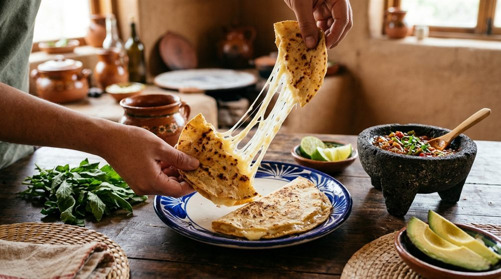

1. Quesadillas con Oaxaca artesanal

La receta más rápida del recetario. El queso Oaxaca ya viene deshebrado, así que no hay que batallar.
Ingredientes
- 250 g de queso Oaxaca artesanal
- 6 tortillas de maíz
- 1 cucharada de aceite o mantequilla
- Salsa verde al gusto
Pasos
- Calienta un comal a fuego medio.
- Pon una tortilla y reparte el queso encima.
- Tapa con otra tortilla y deja que el queso se derrita.
- Voltea la quesadilla cuando esté dorada de un lado.
- Sirve caliente con salsa verde.